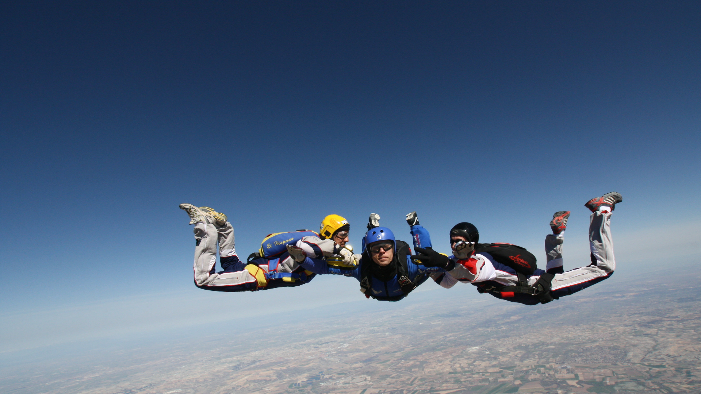

Saltos de bautismo o tandem
¿Querés probar la sensación que se
experimenta en la caída libre pero no tenés
experiencia ni conocimientos sobre este
deporte?
No te preocupes, para eso está el Salto Tandem o Bautismo.
Es simple: venís y una vez en el aeródromo formalizas la inscripción y elegís la opción que deseas.
Podes pedir que te
grabemos un video completo del salto, desde que te equipas en tierra hasta el aterrizaje, y por supuesto
que te saquemos
fotos.
Los instructores te dan una breve charla de 15 minutos donde te explican en qué consiste el salto y cómo
tenés que
comportarte. Se te equipa con un buzo de salto, arnés, casco, gafas y guantes. Es necesario que tengas
ropa cómoda y
calzado deportivo.